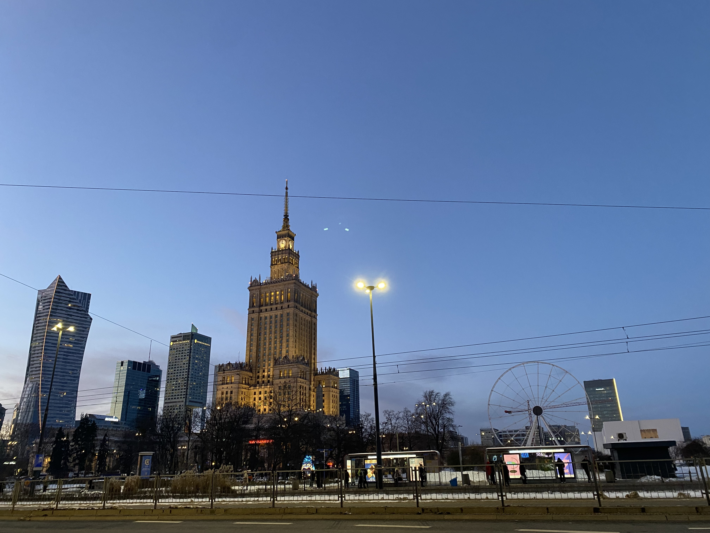

Since I am based in Berlin, I have been able to visit Poland several times. The country has a though historical past, having been invaded and occupied multiple times throughout the centuries and beautiful landscapes, from the medieval towns of Krakow to the stunning Baltic coast. Polish people are generally quite friendly and the polish cuisine is delicious, with Pierogi (polish dumplings) being a must-try dish. In 2016 I had the chance to spend the Eastern weekend with a polish family and try traditional dishes associated with the holiday. My last visit is dated December 2025, where we stopped in Gdansk for a couple of days on my way to the Baltic Sea to explore the city's rich history and culture, spend Christmas day in one of the prettiest and historically most significant polish city and had a little stop over in Warsaw on our way back to Berlin.
Poland is also culturally rich especially regarding classical music and gave birth to some of the best classical composers including Frédéric Chopin. Chopin is generally associated with french culture, mostly because of his surname (his father was born in France), because he spent a substantial part of his life in Paris, never learned french properly and never considered himself as french (according to himself) although he was buried in the cemetery of Père Lachaise. Despite all of the above, Paris was Chopin occasion to become part of an artistic and cultural elite, where he met other famous artists of the time including Franz Liszt and Eugène Delacroix. Chopin benefited from his parisian experience but also gave an enourmous contribution to french contemporary music and other modern composers such as Serge Gainsbourg that wrote songs inspired by Chopin's music like Initials B.B., Variations sur Marilou and Jane B. (d'apres un prelude No 4 in E minor, Op.28). Sadly Chopin health was poor for most of his life and as many other famous cursed artists like Amedeo Modigliani and Franz Kafka, he died at the age of 39 in 1849 in Paris apparently of tuberculosis.

The partition of Poland happened in three moves by the three surrounding superpowers, the Habsburg monarchy, the Kingdom of Prussia and the Russian empire. Before there was the first Polish Republic which means that Poles and Lithuanians were living together under the same umbrella called Polish-Lithuanian commonwealth. Things started to get dirty around 1772 when the Republic lost a certain number of wars, first with Russia, followed by Prussia twenty years after and finished in 1795 with the full cancellation of Poland from the map for the next 123 years. The fact was the beginning of the so called Great Migration of Polish people across Europe that sadly contributed to the dispersion of some of the sharpest and most creative polish minds across the globe and helped other countries to feed their global relevance (classic composer Frédéric Chopin was a clear example). As mentioned before, Poland had to wait for 123 years until the end of World War I in 1918 before seeing its sovereignty being restored.
The story of Czesław Milosz is the story of someone that had to run away from oppression several times in his lifetime and his story somehow reflects the one of his native country, a country that during recent times has been through a turbulent past but it is somehow still standing and able to look at the future in a positive way. During his childhood he survived the German invasion of Poland and moved to Lithuania first in 1915 before to move furthering east and subsequently moved around further and further, putting his life at risk, has he mentioned in his book Native Realm. Milosz was very culturally active during the 2nd German invasion of Poland in 1939, especially for what concerns the translation of some of the classics Anglo-American literary works including those of Shakespeare and T.S.Eliot and contributed to the clandestine traffic of books in the occupied land. As I already mentioned, he had overall a pretty adventurous life and he also served as ambassador of polish culture around the western world. During the times when the United States were going through McCarthyism, he went through strong criticism from both sides, partly for not being "communist enough" and partly for being communist, especially by the time when he moved to Paris where he could find asylum. I came across Czesław Milosz for the first time when I was in Vilnius. On the way from my accommodation to the city center, I regularly had to walk up a flight of stairs that was dedicated to him and I found it quite a nice way to remember someone, rather than the usual memorial plaque, like if during his lifetime he contributed to raise the cultural values of his country, for both regarding local and foreign culture, creating some sort of "one culture" that polish people could benefit from.

Since this seems to be a recurrent axis regarding the polish art world of the last century, after Chopin and Milosz there is one more polish artist that has a strong connection with the country of France which is Krzysztof Kieślowski. Kieślowski is probably the most acclaimed polish filmmaker of the last century, famous for having made different movies which includes Dekalog (1989), a series of ten short movies that can claim the liking of her majesty Stanley Kubrick and the so called Three Colours trilogy (1993/94), a series of movies where the director tries to represent the french revolutionary ideals: liberty, equality and fraternity. Kieślowski received a lot of financial support from France in order to take his art to the point he reached and calling a trilogy of movies with the colours of the french flag was somehow a way to say thanks to the country. In his works Kieślowski depicts a minimalistic vision of Poland, full of silences, empty patterns and short dialogues which was generally very appreciated by the critic.